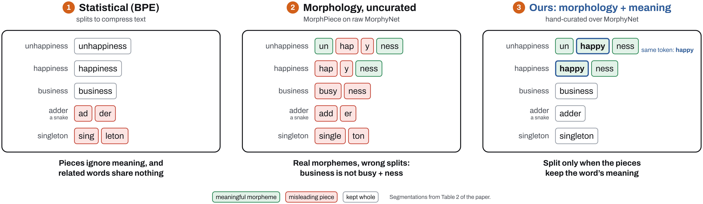
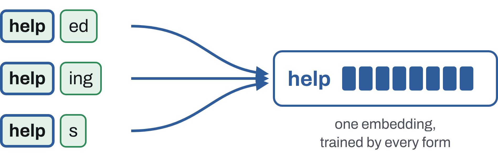
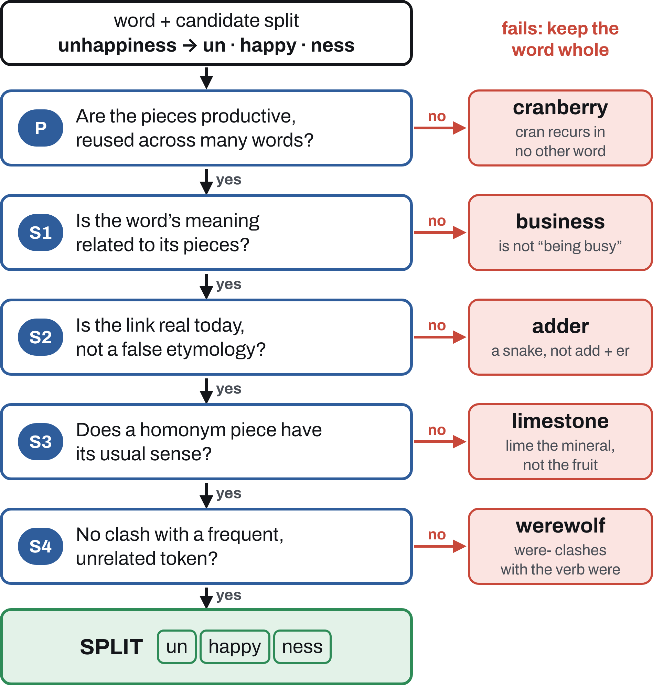
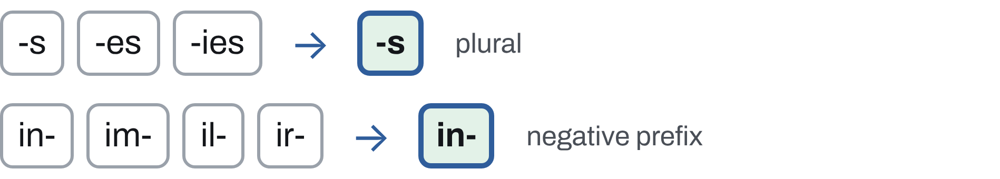
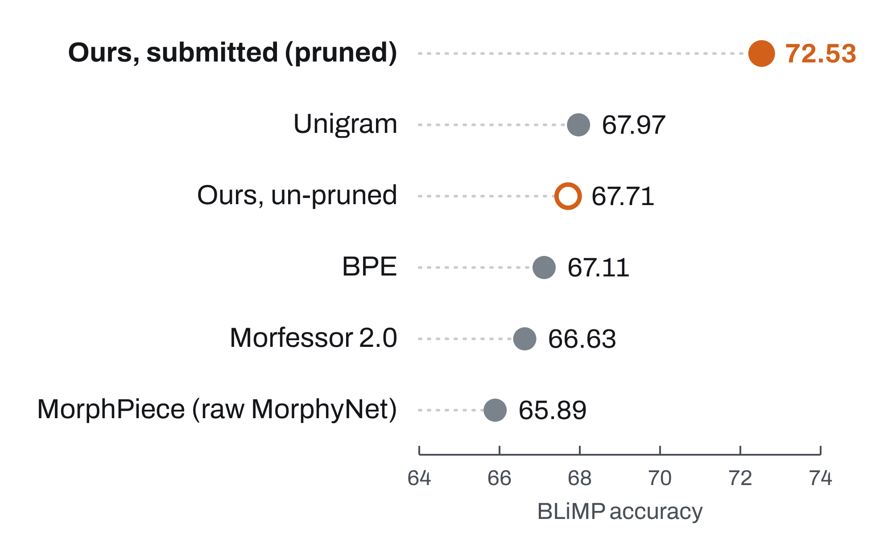

Juan Diego Rodriguez
The University of Texas at Austin
Split words into morphemes
only when the pieces keep the meaning

The BabyLM challenge trains language models on a child-sized budget of 10M words, so each word form is rare. Children readily extend morphological patterns (one wug, two wugs). A tokenizer can do the same: if related forms share a stem token, every form trains it.

A typical shared stem appears in about 3 word forms. That gives it about 36% more training signal than its most frequent form alone.
BPE, WordPiece and Unigram split text to compress it. Their pieces often mean nothing (adder → ad der), and related words can end up with no token in common (unhappiness, happiness).
Splitting adder, a snake, into add er teaches the model that an adder is someone who adds, and it pollutes both pieces. A split helps only if:
Productive: each piece is reused across the vocabulary.
Semantic: the pieces are related to the word’s meaning.
What we did. We hand-curated an English morphological tokenizer that splits a word only when both conditions hold. We then trained child-scale language models with it, changing nothing but the tokenizer.
English morphology is sparse, so the sharing we can recover is modest. MorphyNet, our lexical backbone, covers 15 languages, and morphologically rich languages are where morphology-aware tokenizers have helped most.
A candidate split is accepted only if it passes every check. Failing any one keeps the word whole.

Two more cases stay whole: genuinely ambiguous forms (leaves: leaf + s or leave + s) and proper names with no common-noun use.
Emit lemma-level morphemes, so spelling variants share one token:

Prefer a free word or a recurring root to an invented stem: legitimate stays whole rather than minting the stem legitim.
MorphyNet supplies candidate splits. Its inflection table is clean enough to use almost as is. Its derivation table records history, not modern structure (king → kin ing), so it only proposes candidates.
We hand-segmented 22,137 frequent words, rejecting about 53% of the MorphyNet derivational splits they overlapped. LLM agents (Claude Code) reviewed candidates adversarially; the author made every final decision.
Leaderboard. On the BabyLM 2026 strict-small leaderboard, our submitted model ranks 2nd on COMPS (54.67) and 3rd on EWoK (53.2), with 72.53 on BLiMP.
Curation is what helps. Against an uncurated tokenizer built from the same MorphyNet source, with the same model, data and seed, ours gains +1.4 BLiMP (66.35 vs 64.96).
Concepts. On COMPS, the three morphology-based tokenizers take the top three places in that controlled comparison.
Same training recipe, only the tokenizer changes

The submitted tokenizer also drops morphemes seen fewer than three times and spells out unknown pieces as characters.